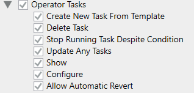

Setting Operator Tasks Application Rights
To allow visibility of the Tasks tab to create and handle operator tasks, users groups must be properly configured with appropriate application rights.
- System Manager is in Engineering mode.
- System Browser is in Management View.
- Select Project > System Settings > Security.
- Select the Security tab.
- In the Groups list, select the appropriate user group.
- In the Application Rights expander, under Operator tasks use the check boxes to enable or disable the rights appropriately.
For more details, see Application Rights for Operator Tasks. 
- Click Save
 .
.